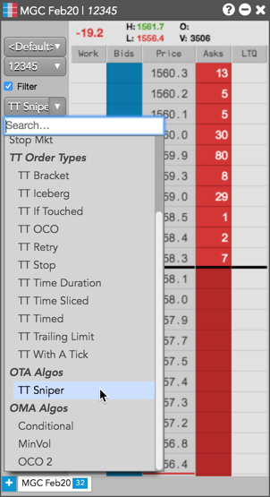
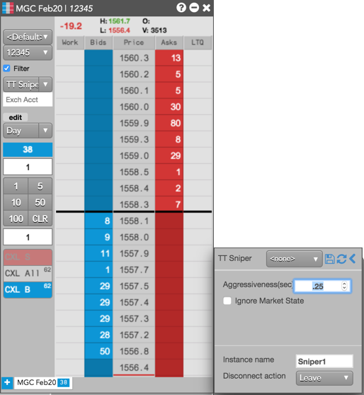
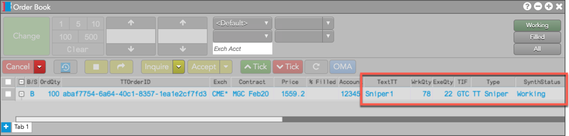
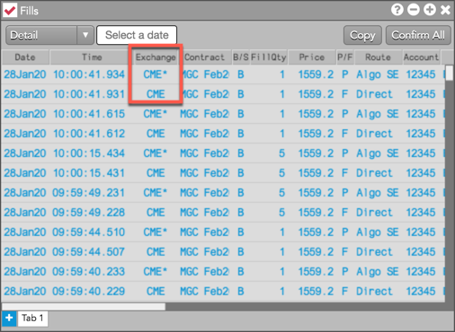
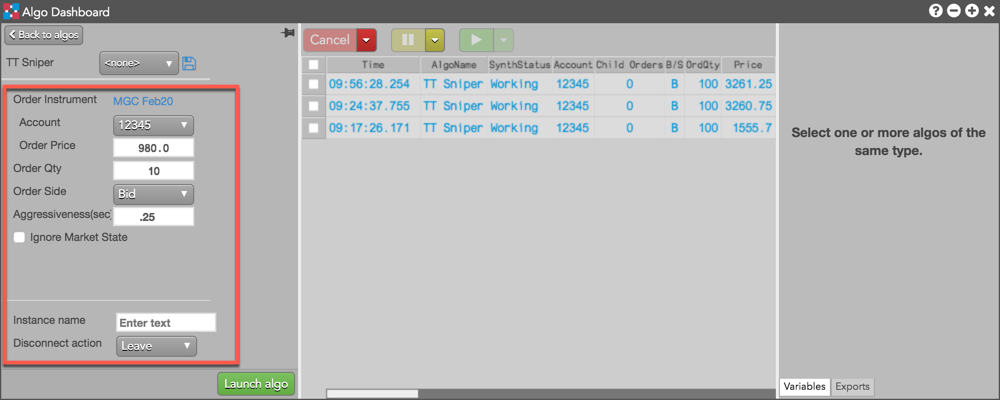
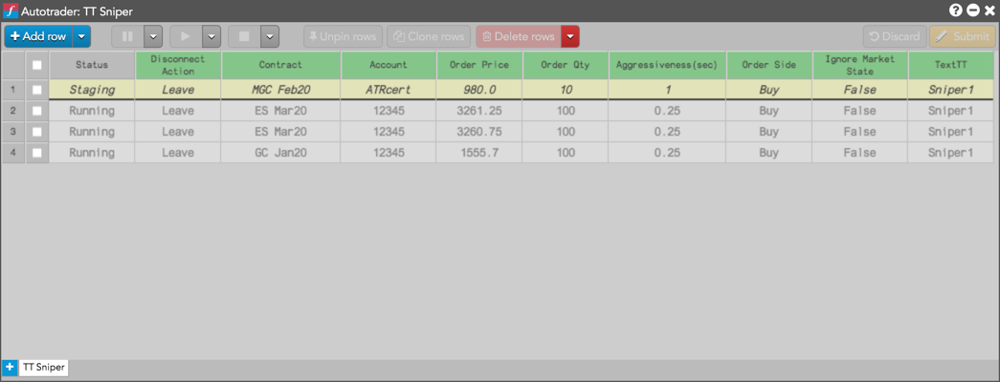

TT Sniper is an Order Ticket Algo (OTA) that allows you to hide your intent to buy or sell at a given price until there is quantity available at that price on the opposite side of the market.
When submitted, TT Sniper looks at the quantity available on the opposite side of the market at the specified order price for the given contract. If there is at least one lot available at this price or better, a child Limit order will be submitted at this price with a quantity equal to the available or remaining quantity to execute, whichever is less.
If the full child order quantity is not immediately filled, TT Sniper will cancel the balance and add the unfilled quantity back to the quantity remaining to be filled. It will repeat this until the total quantity is filled.
You can launch a TT Sniper algo from the following widgets:
Note: You must have a TT Pro license to use TT Sniper.
Submitting a TT Sniper order
To submit a TT Sniper order:
- Click the order types selector in MD Trader or the Order Ticket and select TT Sniper.

You can also launch OTA algos from Market Grid, Autotrader, or the Algo Dashboard.
- Configure the TT Sniper order parameters in the flyout.

- Enter an order quantity and click the desired price level in MD Trader.

If using the Order Ticket, enter a price and quantity and click Buy or Sell.
The Order Book displays the TT Sniper "Instance Name" in the TextTT column, shows the working quantity and executed quantity in WrkQty and ExeQty, and shows the status of the parent TT Sniper order in SynthStatus.

The Fills widget shows both parent order (*) and child order fills. The child order fills are received directly from the exchange.

Launching TT Sniper from the Algo Dashboard or Autotrader
Select TT Sniper from the Algo Explorer pane and configure the TT Sniper order parameters. In Algo Dashboard, you also need to provide the contract, price, quantity, and side for the TT Sniper order.

In Autotrader, click Choose an algo and select TT Sniper. Click Add row to configure the TT Sniper order parameters. You also need to provide the contract, price, quantity, and side for the TT Sniper order.

TT Sniper order parameters
The following parameters are available in the TT Sniper flyout:
- Aggressiveness (sec): Sets the number of seconds to wait before submitting additional orders at the specified price or better. Minimum setting is 0.25 (250 milliseconds). The default setting is "1" second.
- Ignore Market State: Sets whether to ignore changes in the market state.
- Instance name: Custom name to display in the TextTT field.
-
Disconnect action: Sets which action to take if the client loses its connection to TT:
-
Leave: Allow the algo to continue running normally.
-
Pause: Suspend the algo until you manually restart it.
-
Cancel: Delete the algo.